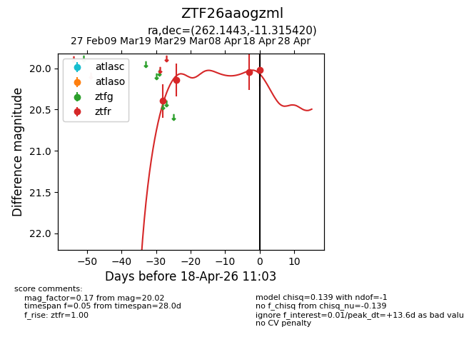
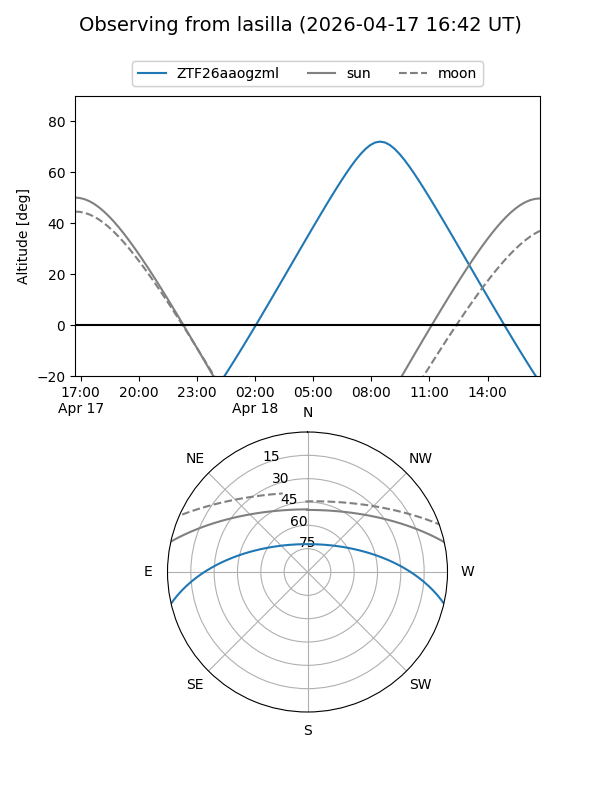
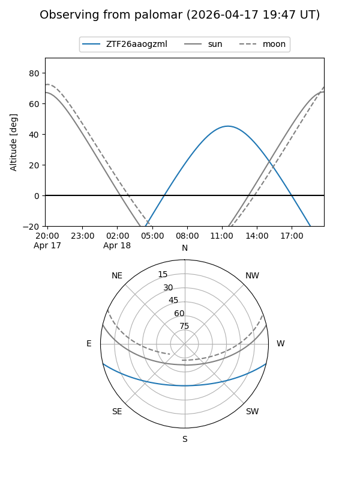
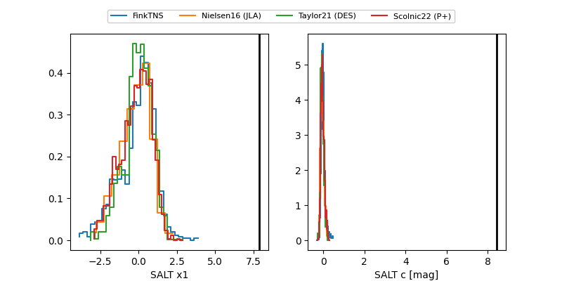

ZTF26aaogzml
Target ZTF26aaogzml at 2026-04-18 11:08
Aliases and brokers:
FINK: link
Lasair: link
ALeRCE: link
alt names
ZTF26aaogzml (ztf,fink_ztf)
Coordinates:
equatorial (ra, dec) = 262.1443,-11.31542
equatorial (HMS+DMS) = 17:28:34.62,-11:18:55.51
galactic (l, b) = (12.9894,+12.66331)
Flags:
Photometry:
last ztfr=20.02
4 ztfr detections
Lightcurve

Visibility


Additional plots
